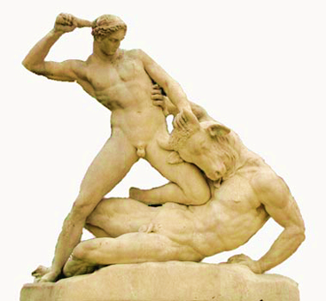
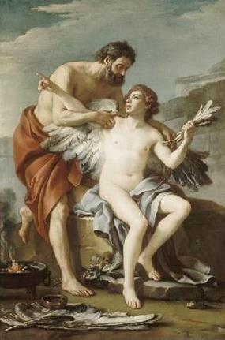
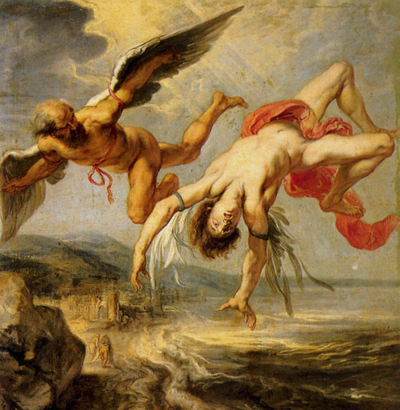

Cuộc tình duyên giữa thần Zeus và nàng Europe đã sinh hạ ba người con trai: Minos, Rhadamanthe và Sarpédon. Zeus giao ba người con này cho vị vua Astérion cai quản hòn đảo Crète, nuôi nấng, chăm nom giúp. Được ít lâu, Astérion băng hà. Tình cảnh lúc này thật khó xử. Thần dân trên đảo Crète chẳng biết cử ai lên kế nghiệp vị vua yêu dấu của họ. Giữa lúc ấy, Minos đứng ra quả quyết rằng mình là người được các vị thần ủy thác cho việc kế thừa sự nghiệp của Astérion, trông coi trăm họ. Để làm cho mọi người tin mình, Minos tự xưng với mọi người là mình vốn được các vị thần sùng ái, muốn cầu xin gì thần thánh cũng ban cho, và Minos cầu xin thần Poséidon ban cho mình một con bò mộng, một con bò từ dưới biển đội nước hiện lên giống như con bò Zeus xưa kia đã hiện lên rồi cõng Europe bơi qua biển. Minos hứa sẽ lễ tạ thần Poséidon, một con bò thật đẹp, thật xứng đáng để cho thần khỏi thua thiệt. Thần Poséidon ưng chuẩn, làm thỏa mãn nguyện vọng của Minos, và từ đó Minos lên ngôi trị vì ở đảo Crète.
Ít lâu sau từ dưới biển hiện lên một con bò mộng trắng như tuyết. Minos đón được con bò này đem về nuôi. Nhẽ ra phải đem nó ra làm lễ tạ ơn thần Poséidon thì Minos lại lờ đi vì tiếc con bò đẹp và chọn một con bò khác thay thế. Biết việc làm dối trá, thần Poséidon nổi giận làm cho con bò xinh đẹp ấy phát điên. Tính nết nó đang hiền lành bỗng dưng trở nên hung dữ. Nó thoát ra khỏi đàn, giày xéo phá phách lung tung. Nhờ có Héraclès từ đất Hy Lạp sang bắt sống nó, thuần phục nó chứ nếu không thì chưa biết đến bao giờ mới chấm dứt được những tai họa ghê người. Lên làm vua, Minos cưới Pasiphaé con gái thần Mặt trời-Hélios làm vợ. Thần Poséidon vẫn chưa nguôi giận về chuyện dối trá của Minos. Thần khơi lên trong Pasiphaé những dục vọng ái ân sôi động, những ham muốn chăn gối không thể chế ngự được. Vì lẽ đó, Pasiphaé sống buông thả với không biết bao nhiêu người đàn ông. Nhưng càng sống buông thả thì những dục vọng ma quái trong người nàng càng sôi sục và nàng không bao giờ chế ngự được hoặc thỏa mãn được nó. Đấy là hình phạt mà thần Poséidon giáng xuống để trừng trị tội không trung thực của Minos. Nhưng chưa hết, khủng khiếp hơn nữa, Pasiphaé lại đem lòng say đắm một con bò mộng. Cuộc tình duyên giữa đôi bò-người này đẻ ra một đứa con nửa bò nửa người, tên gọi là Minotaure khiến cho vua Minos vô cùng đau buồn và bực tức. Thật là một chuyện xấu xa ô nhục để tiếng đời đời. Giết Minotaure đi thì không đành mà để lại như là một đống dơ trước mặt. Phải mau chóng tìm cách gì che giấu cái đứa con “tội nợ” này đi mới được. Được một quần thần tin cẩn hiến kế, Minos quyết định xây một cung điện thật lắt léo phức tạp để nhốt Minotaure. Cung điện này phải xây sao cho đường vào thì có mà đường ra thì không. Kẻ nào tò mò lần tìm đường vào thì chỉ có chết mục xương ở trong đó. Nhưng tìm đâu ra một người có thể thực thi được ý đồ này của Minos? Song nhà vua đã quyết như thế thì quần thần phải tìm bằng được, và người ta đã tìm ra chàng Dédale. Chính Dédale mới vạch ra cho Minos cái lối thoát: xây dựng một cung điện như đã kể trên. Người ta lại còn kể về Pasiphaé như sau: bị những dục vọng điên cuồng thôi thúc, nàng đã thúc Dédale làm cho mình một con bò mộng bằng gỗ rồi nằm vào trong bụng nó. Kết quả là nàng đẻ ra Minotaure. Chuyện này xem ra không được phổ biến.
Bực mình với Pasiphaé, nhà vua không thèm chung chăn gối với nàng nữa. Nhà vua lao vào những cuộc tình duyên say đắm mà người xưa không bao giờ nhớ được tên những thiếu nữ có cái diễm phúc được “tựa mạn thuyền rồng”. Pasiphaé nổi ghen. Nàng yểm một lá bùa xuống dưới tấm nệm trên giường của Minos. Vì thế cứ người thiếu nữ nào vào chia chăn sẻ gối với Minos là bị chết. Những con bọ cạp và rắn độc từ dưới đệm bò lên cắn, truyền nọc độc vào người bạn tình của Minos.
Nói về Dédale. Dédale là ai mà tài giỏi như thế? Xin kể qua lai lịch của chàng. Đáng tiếc là ta không rõ chàng là con ai, con một người trần thế đoản mệnh hay một vị thần bất tử? Chúng ta chỉ được biết chàng là người ở bên đất Hy Lạp, vốn sinh cơ lập nghiệp ở đô thị Athènes, dòng dõi Érechthée, một vì vua ở Athènes đã có công lớn trong cuộc chiến tranh chống lại sự xâm lăng của nhà vua Thrace. Ông đã hiến dâng người con gái của mình cho thần thánh. Nhờ đó liên minh của Eumolpos với những người Éleusis bị Athènes đập tan. Nhưng vì duyên cớ gì mà chàng Dédale lại lưu lạc tới đất Crète? Dédale tới đất Crète không phải vì đeo đuổi một cuộc tình duyên, cũng không phải vì sự nghiệp anh hùng hoặc vì muốn lập một chiến công ích nước lợi dân nào hết. Chàng tới đất Crète, đúng hơn là chàng phải trốn sang đảo Crète vì chàng phạm tội giết người.
Dédale vốn là một người thợ tài giỏi bậc nhất ở đô thành Athènes. Thật khó mà tìm thấy một con người thứ hai giống như Dédale, nghĩa là tài năng, giàu óc sáng tạo như Dédale. Từ bàn tay của chàng mà những người Athènes có những bức tượng vô cùng đẹp đẽ để thờ cúng, để làm đẹp cho khu vực Acropole thiêng liêng. Lâu đài, đền miếu, điện thờ... rồi đến cái bình hình dáng thon thon có hai quai, chiếc rìu, lưỡi búa đều từ đầu óc Dédale nghĩ ra hoặc từ bàn tay Dédale làm ra. Những hình vẽ trên vại gốm, những cảnh trạm khắc trên đồng... đều do hoa tay của người thợ Dédale tỏa hương ra cả. Danh tiếng của Dédale vang lừng khắp thế giới Hy Lạp.
Dédale hàng ngày cặm cụi làm việc. Giúp chàng có một người cháu gọi bằng cậu, tên là Talos. Talos vừa làm nhưng cũng là vừa học. Cậu nào cháu ấy, Talos học một biết mười vì thế ông cậu Dédale rất hài lòng. Nhưng rồi một ngày kia, ông cậu thân yêu của đứa cháu rất thông minh đó không hài lòng, hoàn toàn không hài lòng. Vì Talos làm hỏng một việc gì chăng? Không, Dédale không hài lòng chỉ vì Talos tỏ ra tài giỏi hơn chàng. Talos đã dựa theo một cái xương cá sáng chế ra một cái cưa, một dụng cụ vô cùng hữu ích và thuận lợi cho công việc người thợ. Không có cái cưa, ta thử tưởng tượng xem, cứ chặt, chém, đẽo, gọt bằng dao thì làm sao cho nhanh, cho mỏng, cho thẳng được. Dédale đem lòng thù ghét đứa cháu yêu quý đầy tài năng sáng tạo, đầy hứa hẹn biết bao nhiêu sáng chế phát minh. Dédale tính toán lo sợ rằng rồi ra danh tiếng và tài năng của Talos sẽ làm lu mờ cái tên Dédale. Vì thế Dédale lập mưu giết cháu. Chuyện xảy ra trong một cuộc dạo chơi. Dédale bữa kia vờ rủ cháu đi lên bờ thành cao dạo mát, ngắm phong cảnh để rồi bất ngờ đẩy cháu từ bờ thành cao ngã xuống chân thành. Thật không gì khủng khiếp và đê tiện bằng! Giết cháu xong, Dédale lần xuống chân thành chôn xác phi tang. Nhưng những người Athènes bắt gặp Dédale đang đào huyệt. Thế là họ truy ra sự thật. Dédale phải ra tòa để bị xét xử, và tòa án thành Athènes thật là nghiêm minh, đã kết án tử hình. Để tránh khỏi xử tử, Dédale phải tự trục xuất ra khỏi đô thành Athènes. Chàng trốn sang đảo Crète, và đúng vào lúc xảy ra chuyện Pasiphaé sinh ra đứa con nửa bò nửa người thì Dédale đang là một kiều dân Athènes cư trú trên đảo Crète. Ở đảo Crète tiếng tăm của chàng cũng lừng vang. Vì thế, chàng được nhà vua Minos triệu đến để hiến kế. Dédale khuyên nhà vua cho xây một cung điện, một cung điện có lối đi vào hiểm hóc, ngoắt ngoéo, xoáy trôn ốc, vặn vẹo để nhốt Minotaure. Có như thế mới hòng che mắt được mọi người. Minos ra lệnh cho khởi công ngay. Dưới sự chỉ huy của Dédale, mọi việc tiến hành đâu ra đấy, răm rắp nhanh chóng. Labyrinthe là tên gọi của tòa nhà ngục tráng lệ và rối tinh rối mù đó. Chẳng biết có bao nhiêu phòng, bao nhiêu buồng, còn hành lang thì chằng chịt, lên lên xuống xuống... Công việc hoàn thành. Người ta đem nhốt Minotaure vào trong đó, và quả thật đúng như ý đồ của vị “tổng công trình sư” Dédale, Minotaure không lần tìm được lối ra, đành chịu sống... chết gí trong cung điện “bát trận đồ” ấy.
Để nuôi Minotaure phải cho nó ăn thịt sống: thịt các súc vật hoặc thịt người. Vua Minos mỗi lần gây chinh chiến, áp đặt được quyền lực lên lãnh địa của một vị vua nào thì lập tức bắt họ, phải hàng năm đúng hẹn đúng kỳ đem nộp một số người cho Minotaure ăn thịt. Xứ sở Athènes đã phải chịu cái thảm họa đó đến ngày vị anh hùng Thésée, nhờ sự giúp đỡ của Ariane, con gái vua Minos, trừng trị được con quái vật Minotaure.
Ở Crète, khi biết chuyện Minotaure bị giết, Minos vô cùng uất ức. Bút nào tả xiết được cơn thịnh nộ của các bậc đế vương vốn đã từng quen sai khiến và bắt người khác phải phục tùng! Làm sao Thésée lại dám ngạo mạn như thế. Minos tức giận đến lồng lộn, điên cuồng. Song chẳng phải vì Minos yêu mến Minotaure mà căm giận Thésée đến như thế. Không, đó chỉ là thói thường của những vị vua xưa nay chẳng ưa thích kẻ nào làm trái ý mình. Minos bắt nhốt Thésée vào Labyrinthe là để cho Minotaure ăn thịt, là để giết hắn. Nhưng làm sao hắn có thể làm đảo lộn tình hình. Cái tên này quả là ghê gớm, quả là to gan lớn mật.
Minos càng nghĩ càng căm đứa con gái đã thông đồng bày mưu cho Thésée thoát nạn, một mưu mẹo khá khôn khéo mà Minos không thể ngờ tới được. Minos càng tức giận lũ quân canh đã canh phòng sơ khoáng để cho Thésée phá hỏng những chiếc thuyền. Sau bao thời gian vắt óc suy nghĩ cố tìm ra một tội phạm để trừng trị trả thù cho hả dạ, cuối cùng Minos nghĩ tới Dédale. Hẳn là tên này đã bày mưu, đặt kế cho cái vụ phản nghịch hỗn xược này. Kể ra nhìn qua xem như Dédale vô tội. Nhưng càng suy nghĩ kỹ thì Minos càng thấy đích thực cái tên Hy Lạp này chỉ là thủ phạm. Chính hắn là người xây nên cái cung điện Labyrinthe và chỉ có hắn là người duy nhất biết cái hiểm hóc của nó. Hắn lại là người đồng bang với Thésée, cùng chung xứ sở quê hương với Thésée nên hắn mới bày mưu cho Thésée trốn thoát khỏi cung điện Labyrinthe. Bằng những lý lẽ như vậy, Minos quyết định trị tội Dédale. Nhà vua đập bàn thét vang, sai quân lính đi bắt ngay Dédale đem nhốt vào cung điện Labyrinthe thế chân cho Minotaure bữa trước. Không phải chỉ có một mình Dédale bị bắt mà cả con Dédale, chú thiếu niên Icare, cũng bị áp giải theo cha.
Thật ra thì sự việc diễn ra hơi khác một chút. Ariane khi thấy Thésée trong đoàn người cống vật, nàng đã vội tìm đến Dédale để xin Dédale bày mưu cứu thoát. Chính Dédale là người đã nghĩ ra cái kế “cuộn dây Ariane”.
Bị nhốt vào cung điện ngục tối Labyrinthe song Dédale không hề bối rối. Trong chỗ ở của Minotaure còn ngổn ngang, bừa bãi xác chết của vô số gà, vịt, chim, ngỗng do Minotaure ăn còn thừa bỏ lại. Từng quãng trong cung điện lại có những tổ ong lớn, và chỉ có thế thôi là đủ cho chàng Dédale khôn khéo, thông minh tìm được cách thoát thân. Chàng lượm lặt các lông cánh trên xác những con vật còn lại, lấy sáp ong chắp gắn vào, chỉ trong vài ngày hai cha con Dédale và Icare đã làm được mỗi người một đôi cánh, và thế là một buổi sáng kia, hai cha con dỡ mái cung điện lấy lối ra, để bay thoát ra ngoài. Chỉ bằng cách ấy thì mới thoát khỏi sự canh phòng cẩn mật của lũ lính gác. Dédale và Icare bay về Hy Lạp. Hành trình chẳng phải ngắn song có điều chắc chắn là thuận lợi hơn đi thuyền, nhanh hơn đi thuyền. Dédale tính toán lo xa đủ đường. Chàng dặn dò cậu con trai yêu quý lúc nào cũng phải bay sau mình, bay theo đường bay của mình, không được bay thấp quá, không được bay cao quá, nhất là càng bay lên cao thì càng nguy hiểm. Nhưng Icare đâu có nhớ lời cha dặn. Được tung mình vào không trung bát ngát, bay lượn vẫy vùng trên khoảng trời mênh mông, Icare vô cùng thích thú. Ôi chao, sướng đến mê người! Nhà cửa ở dưới đất nom bé hẳn lại, người thì cứ như là những con kiến nhỏ tí. Rừng cây xanh biếc, ruộng lớn vàng rượi, đồi trọc đỏ tươi, nước sông thì trăng trắng một vệt dài luồn lách ngoằn ngoèo trên từng mảnh, từng mảnh của cái tấm thảm nhiều màu sắc rực rỡ đó. Thật tuyệt đẹp! Bay ra đến biển thì không vui mắt bằng. Tất cả chỉ là một màu xanh, một màu xanh bát ngát, mênh mông, xanh ngăn ngắt, vô cùng vô tận, xanh đến rợn cả người! Những hòn đảo nổi lên như một cái chấm đen nom y như một cái nốt ruồi ấy! Và biển xanh thở phập phồng, lung linh những vệt trắng nho nhỏ của những cuộn sóng. Càng bay, Icare càng thích thú, càng ham muốn bay cao lên nữa. Chú bé tự hỏi: “Ở cái khoảng không gian xanh thẫm như biển kia, cao tít trên đầu kia có gì nhỉ?”. Đây mới chỉ thấy có những đám mây, những đám mây như những con thuyền trôi bồng bềnh, dập dờn. Có lúc Icare lại tưởng chúng như những búi bông được nhả ra từ một cái cán nào đó... Chú bé say sưa với những luồng suy tưởng của mình. Chú nghĩ đến những vì sao như những hòn ngọc trong màn đêm đen mịn như nhung, chú nghĩ đến mặt trời rực lửa... Icare triền miên trong suy tưởng và có lúc đã nghĩ rằng mình chẳng khác chi một vị thần vẫn từ thế giới Olympe bay xuống trần, đi đi về về vì biết bao công việc rắc rối của những người trần thế, và cứ thế cậu bay vút lên cao, lên cao mãi. Quên bẵng mất lời cha dặn, cậu bé muốn tung hoành ngang dọc trong bầu trời để thỏa mãn trí tò mò, ham hiểu biết của mình. Nhưng một tai họa khủng khiếp giáng ngay xuống đầu Icare: càng bay lên cao, càng gần mặt trời, càng nóng. Sức nóng của mặt trời làm sáp ong chảy tan ra nước và đôi cánh của cậu phút chốc rơi rụng lả tả tựa lá vàng rụng trước gió đông. Icare mất thăng bằng ngã lộn nhào từ trên cao xuống biển, cậu rơi xuống như một hòn đá! Một hòn đá rơi từ chín tầng mây xuống chìm nghỉm trong tấm thảm màu xanh. Vì không phải là con của thần thánh như Héphaïstos cho nên Icare chết. Nhưng người xưa muốn cho cậu sống mãi nên đã đặt tên quãng biển ở đảo Samos, trước mặt đô thị Milet là “biển Icare” và cả một hòn đảo trên vùng biển ấy là “đảo Icare”.
Dédale đau xót về cái chết của đứa con trai khôn xiết. Nhưng làm thế nào được, không lẽ chàng lại hạ cánh xuống giữa biển khơi để vớt xác con. Chàng phải tiếp tục bay. Nhưng chàng không trở về Hy Lạp nữa. Chàng hạ cánh xuống vùng Cumes một nơi gần Naple177 thuộc nước Ý và xây dựng một đền thờ thần Apollon. Trên cánh cửa của ngôi đền, Dédale khắc họa lại lịch sử của đời mình và cuộc hành trình vừa qua. Chàng cũng không quên khắc họa cuộc đời đứa con thân yêu đã bỏ mình giữa đường. Sau đó Dédale rời Cumes đi xuống đảo Sicile. Chàng dừng chân lại ở đô thành Camicos của vua Cocaios.
Được tin Dédale trú ngụ tại cung điện của nhà vua Cocaios, Minos bèn thân chinh thống lĩnh một đội chiến thuyền kéo sang đảo Sicile. Nhà vua kéo đại binh đến đô thành Camicos, mưu dùng áp lực của binh hùng tướng mạnh buộc Cocaios phải dâng nộp Dédale cho mình. Biết tin, Dédale sợ hãi quá chừng. Chàng cầu xin Cocaios che giấu, bảo vệ tính mạng cho mình. Ở Hy Lạp xưa kia, khước từ lời cầu xin bảo hộ che chở cho tính mạng một con người đang lâm vào tình cảnh bị đe dọa là một điều vi phạm vào truyền thống đạo đức thiêng liêng do thần Zeus vĩ đại ban bố. Vì lẽ đó, Cocaios sẵn sàng bênh vực Dédale. Nhà vua đưa Dédale vào phòng riêng những con gái của mình, nơi mà nhà vua cho là kín đáo hơn cả, Dédale được ở một chỗ kín đáo, lấy làm vững dạ và tin rằng Minos khó có thể tìm thấy mình.
Minos được tiếp kiến nhà vua Cocaios. Y hỏi ngay Cocaios về tung tích của Dédale. Cocaios đáp lại:
- Thưa quý khách, nhà vua Minos nổi danh vì những lâu đài tráng lệ trên hòn đảo Crète quanh năm sóng vỗ! Không có ai! Tuyệt không có ai, mảy may không có ai... chúng tôi không hề thấy ở đây có một người nào mang tên như thế và có hình dáng cùng tài năng như thế...
- Ồ, thôi, thôi! Điều đó chẳng có gì làm ngài phải bận tâm. - Minos vừa xua xua tay vừa đáp lại. - Thế nào cuối cùng tôi cũng tìm được tên đó... À, nhưng thưa ngài, trong khi chờ đợi, xin phiền một chút. Tôi có một việc khó khăn muốn nhờ ngài giúp hộ một tay. Chắc ngài vui lòng nhận giúp chứ? Đây chỉ có thế này thôi, tôi muốn luôn sợi chỉ qua cái vỏ con ốc này... Thế mà chẳng biết làm cách sao, thật ngu ngốc! Xin ngài chỉ dẫn giùm.
Cocaios vốn khờ dại và lại ưa phỉnh nịnh, khoe khoang nên không hiểu mưu thâm của Minos. Cocaios vội trả lời:
- Ồ, thưa ngài, có khó gì gì! Chỉ một lát thôi là tôi có thể làm xong cái việc dễ như trò trẻ đó...
Nhưng Cocaios đâu có biết làm. Nhà vua đến nhờ Dédale chỉ dẫn, Dédale bèn bắt một con kiến to, đính một sợi dây chỉ vào nó và thế là trong chốc lát con vật đã lượn qua các đường xoáy trôn ốc. Cocaios bèn ra gặp Minos, kiêu hãnh chìa con ốc ra cho hắn biết cái tài khôn khéo của mình.
- A! - Minos đập bàn reo lên, quắc mắt nhìn thẳng vào mặt Cocaios - Ngài còn dám một mực nói với tôi rằng Dédale không có ở đây nữa không? Không có người thứ hai đâu! Trên thế gian này chỉ có mỗi một người làm được cái việc này thôi. Người đó chính là hắn, là Dédale đấy!
Nghe xong, Cocaios lạnh toát cả người, toàn thân run lên cầm cập, Cocaios vội thú nhận đã giấu Dédale, chỉ xin Minos cứ bình tĩnh nghỉ ngơi trong cung điện ít ngày để ông có kịp khoản đãi một nhà vua danh tiếng.
Nói về Dédale, khi làm công việc mà Cocaios nhờ, trong lòng đã nghi nghi hoặc hoặc, bụng bảo dạ: Có lẽ Minos đã lần tìm được tới đây. Chàng bèn bàn với những cô con gái của Cocaios cho sửa chữa ngay những ống dẫn nước đến nhà tắm. Theo phong tục của người Hy Lạp xưa kia thì khi có khách quý đến chơi, người ta thường sai gia nhân đem nước nóng đến rửa chân cho khách và mời khách đi tắm, sau đó mời khách vào dự tiệc. Minos vào buồng tắm và từ các ống dẫn nước xối xuống, tuôn chảy ra không phải là nước nóng mà là dầu sôi sùng sục, Minos bị luộc chín. Đến đây kết thúc số phận tên vua Minos tàn ác. Có người kể, không phải Dédale bàn định với những cô con gái của Cocaios mà chính đích thân nhà vua đã mật báo cho các con gái mình biết mưu đồ của mình để các cô thi hành. Đền đáp lại công ơn của Cocaios, chàng Dédale tài giỏi đã xây dựng cho nhà vua nhiều lâu đài, đền, điện đẹp đẽ, tráng lệ, nguy nga. Nhưng chàng, theo một truyền thuyết, không ở lại đất Sicile. Chàng trở về Athènes, Hy Lạp đề truyền dạy tài năng và nghề nghiệp của mình cho con cháu. Những người thợ thủ công lành nghề, những nghệ sĩ tài năng ở Athènes sau này đều thuộc dòng dõi, huyết thống của Dédale. Họ mang một cái tên chung là Dédalides. Một truyền thuyết khác lại nói Dédale sống ở Sicile cho đến cuối đời. Người ta còn kể, chính người anh hùng Héraclès đã vớt được xác Icare và làm lễ an táng cho cậu.
Còn Minos, sau khi chết, xuống âm phủ được thần Hadès giao cho công việc xét xử các linh hồn. Bên Minos còn có hai người giúp việc là Rhadamanthe, em ruột của Minos, và Éaque, một đấng minh quân xưa kia trị vì ở đảo Égine.
Huyền thoại về Minos cho ta hai hình ảnh về vị vua này: một tên bạo chúa và một đấng minh quân. Về đấng minh quân, hoàn toàn có cơ sở để chúng ta nhận định rằng hình ảnh này thuộc về một nguồn huyền thoại cổ hơn. Người ta kể, thần Zeus và Minos thường gặp nhau trong một chiếc hang đá để trao đổi ý kiến về việc điều hành pháp luật trong đời sống. Minos còn đàm luận rộng rãi với cái vị thần, chịu khó lắng nghe mọi ý kiến để từ đó rút ra những lời răn dạy quý báu cho công việc cai trị. Nguồn thần thoại Minos tên bạo chúa, rõ ràng phản ánh thời kỳ giữa Crète và Athènes hoặc Hy Lạp đã có những cuộc đụng độ. Hẳn rằng những xung đột chỉ có thể xảy ra khi Crète đã có một nhà nước khá mạnh, khá phát triển đối với trình độ văn minh ở vùng biển Égée. Ta thấy ở đây lưu dấu lại, đọng giữ lại nhiều dư âm về một thời oai liệt của Crète. Nhà khảo cổ học người Anh Arthur Evans178 đã sử dụng cái tên Minos để chỉ nền văn minh mà ông phát hiện được ở đảo Crète.
Tuy nhiên trong huyền thoại về Minos, một nhà lập pháp, một đấng quân minh, ta cũng thấy có một lớp ở vào một thời kỳ muộn hơn ghép vào. Đó là Minos trở thành người xét xử các linh hồn, nghĩa là một quan niệm tôn giáo về sự thưởng phạt ở thế giới bên kia vốn chỉ đến thế kỷ V TCN mới xuất hiện trên đất Hy Lạp.
Huyền thoại về Minotaure gắn liền với những tín ngưỡng tôtem và gợi cho ta nhớ đến những tục giết người để hiến tế thần linh. Có nét gì gần gụi giữa Minotaure với vị thần Moloch179 của người Ammonites (Phénicie)180, chứng tỏ có một sự vận động, di chuyển của môtíp “con bò” từ phương Đông sang phương Tây.
Như vậy, huyền thoại về chiến công của người anh hùng Thésée, về tài năng sáng tạo của Dédale là sản phẩm của một thời kỳ muộn hơn - thời kỳ chế độ phụ quyền - được kết hợp, nhào nặn với một lớp huyền thoại cổ xưa hơn để hình thành một huyền thoại, truyền thuyết về người anh hùng Thésée với những chiến công vĩ đại mở đầu cho việc xây dựng, mở mang vùng đồng bằng Attique, tạo lập nên những thiết chế xã hội mới là tiền đề, là cơ sở cho sự hình thành nhà nước Athènes.
***
Về nguồn gốc của từ Labyrinthe (tiếng Hy Lạp: Laburinthos), theo các nhà nghiên cứu, có hai cách giải thích. Một là, Labyrinthe gốc từ labras là cái rìu hai lưỡi, vật tượng trưng cho quyền lực thiêng liêng của các vị vua trên đảo Crète. Những cuộc khai quật khảo cổ học đầu thế kỷ XX và tiếp đó đã phát hiện ra trước hết ở Cnossos và một số trung tâm khác trên đảo Crète những dí tích của một nền văn minh cung điện huy hoàng. Trên những mảnh tường cung điện còn sót lại, người ta thấy vẽ hoặc chạm nổi hình một chiếc rìu hai lưỡi, từ đó các nhà nghiên cứu giả định: Labyrinthe là tên chiếc ngai vàng của vị vua Ai Cập Pharaon Amménéme III. Nhà vua này ra lệnh cho triều đình xây dựng cho mình một cung điện và lấy tên chiếc ngai vàng của mình - Labyrinthe - đặt tên cho cái cung điện đó, một công trình xây dựng hết sức công phu, phức tạp, tốn kém.
Theo những tài liệu của các tác giả cổ đại thì có tất cả bốn cái Labyrinthe:
1 - Labyrinthe ở đảo Crète, theo truyền thuyết do Dédale xây dựng và nhà vua Minos nhốt đứa con nửa người nửa bò Minotaure của mình. Cung điện mà nhà khảo cổ học người Anh Arthur Evans phát hiện được ở Cnossos là một công trình kiến trúc khá tinh vi và phức tạp. Trong cung điện có tới 800 phòng, phòng nào cũng được trang hoàng khá lộng lẫy. Người ta đã biết đưa nghệ thuật hội họa và điêu khắc vào để làm đẹp cuộc sống. Trong lâu đài có xưởng thợ, nhà ngục, mười tám kho ủ rượu, một hệ thống ống dẫn nước đến các phòng tắm. Đáng chú ý hơn nữa là đã có một sân khấu với 500 chỗ ngồi. Các nhà nghiên cứu gần như nhất trí cho rằng cung điện Labyrinthe trong truyền thuyết về Minos-Minotaure-Dédale là cung điện này.
2 - Labyrinthe ở Ai Cập, thuộc vùng Fayoum, theo nhà sử học Hy Lạp cổ đại Hérodote (484-425 TCN) miêu tả có khoảng 3000 phòng, do Pharaon Amménéme III xây dựng vào quãng thế kỷ XIX TCN.
3 - Labyrinthe ở đảo Samos181, xây dựng dưới triều vua Polycrate vào quãng thế kỷ VI TCN.
4 - Labyrinthe ở Ý, xây dựng dưới triều vua Porsenna người Étrusques, ở vùng Chiusi. Đây là một kiểu nhà mồ. Cần nói thêm, có những kiến giải cho rằng nguồn gốc xa xưa của Labyrinthe là một nhà mồ lớn ở dưới đất và nằm trong một hang đá hoặc đào khoét một ngọn núi thành hang rồi xây nhà mồ ở dưới đất. Kiểu nhà mồ này là của những nhân vật vương giả, xây cất công phu và phức tạp, ra đời đầu tiên ở Ai Cập. Sau này Labyrinthe không còn chức năng là nhà mồ nữa. Người ta xây dựng những cung điện, những Labyrinthe, nhưng vẫn giữ lại cái phong cách cũ: một cung điện có nhiều phòng, nhiều hành lang, đường đi ở trong cung điện phức tạp.
Ngày nay, Labyrinthe trở thành danh từ chung chỉ những công trình kiến trúc phức tạp, cầu kỳ, rắc rối mà chúng ta thường quen gọi là mê cung. Mở rộng nghĩa, nó chỉ là một tình trạng rắc rối, phức tạp hoặc một tình thế bế tắc không lối thoát182. Chúng ta còn dùng từ Bát trận đồ để diễn tả ý nghĩa tương ứng với Labyrinthe.
Vì Dédale là người xây dựng nên cung điện Labyrinthe nên Dédale cũng trở thành danh từ chung với ý nghĩa: 1) Đồng nghĩa với Labyrinthe. 2) Người thợ giỏi, người khéo tay.
177 Napoli Naples là một đô thành ở bờ biển phía Tây miền nam nước Ý, trên bờ biển Tyrrhénienne.
178 Arthur Evans (1851-1941) chia nền văn minh phát hiện ra ở đảo Crète đầu thế kỷ XX ra làm ba thời kỳ: Minos cổ, 3000-2100 TCN; Minos giữa, 2100-1580 TCN; Minos cuối, 1580-1200 TCN.
179 Moloch là vị thần thân người đầu bò, ăn thịt người. Trong lễ hiến tế người ta thui trẻ con để dâng Moloch.
180 Ammonites là một bộ tộc người cổ thuộc nước Syrie ngày nay, mang tên vị thần thủy tổ là Ammon, con trai của Loth.
181 Samos là một hòn đảo trong quần đảo Sporade gần đô thành Ephèse, vùng ven biển Nam Tiểu Á.
Chương này ở hai bản có hơi khác nhau nay bổ xung thêm bản chưa chỉnh tên để bạn đọc tham khảo
Để nuôi Minôtor phải cho nó ăn thịt sống: thịt các súc vật hoặc thịt người. Vua Minôx mỗi lần gây chinh chiến, áp đặt được quyền lực lên lãnh địa của một vị vua nào thì lập tức bắt họ, phải hàng năm đúng hẹn đúng kỳ đem nộp một số người cho Minôtor ăn thịt. Xứ sở Aten đã phải chịu cái thảm họa đó đến ngày vị anh hùng Têdê trừng trị được con quái vật Minôtor.
Câu chuyện xảy ra thật ly kỳ và biết bao đau xót, thương tâm. Người ta bảo đầu mối mọi việc xảy ra bắt nguồn từ cái chết của Ăngđrôgiê (Androgée).
Ăngđrôgiê là con trai của vua Minôx, vốn là một thanh niên tuấn tú, tài ba. Bữa kia nhân vị vua Êgiê (Égée) ở đô thành Aten mở hội tổ chức các cuộc thi đấu võ nghệ và các trò vui, Ăngđrôgiê biết tin liền sang tham dự. Trong những cuộc thi đấu, chàng thanh niên của đất Cret đã giành được thắng lợi rực rỡ. Chàng đoạt hầu hết các giải. Thôi thì tất cả, giải chạy, giải vật, giải phóng lao, ném đĩa... đều rơi vào tay người con trai vua Minôx này cả. Ghen tức vì một người ngoại lai tài giỏi, vua Êgiê bắt chàng phải đi trừng trị một con bò mộng hung dữ đang tàn phá vùng đồng bằng Maratông (Marathon). Con vật này rất kinh khủng. Nghe đâu mũi nó phun ra lửa. Nó đã tàn phá mùa màng ở vùng này trong hàng bao nhiêu năm khiến cho nhân dân vô cùng khốn khổ. Ăngđrôgiê đọ sức với con vật. Nhưng tiếc thay chàng không chiến thắng được nó. Chàng bị nó húc chết. Có người kể chuyện này hơi khác đi một chút. Ăngđrôgiê sau khi đoạt hất cái phần thưởng ở Aten bèn sang Tebơ tham dự hội nhưng dọc đường chàng bị những người Aten, vì ghen tị, ám hại.
Được tin con trai chết, Minôx liền chiêu tập chiến thuyền, hội nghị tướng lĩnh rồi định ngày hạ thủy, tiến sang đất Aten, hỏi tội nhà vua Êgiê, rửa hờn cho vong linh đứa con yêu quý. Cuộc chiến tranh giữa Cret với Aten diễn ra dằng dai không biết mấy năm trường. Người Aten lâm vào một tình thế rất nguy kịch. Thần Dớt chấp nhận lời cầu xin của Minôx, đã gây ra một vụ dịch bệnh khủng khiếp để trừng phạt Aten về tội đã vi phạm vào truyền thống quý người trọng khách. Trước tình cảnh đó, cái tướng lĩnh Aten chỉ còn cách sắm sanh lễ vật hiến tế các thần để xin lời chỉ dẫn. Sau khi giết biết bao súc vật để làm lễ hiến tế, và giết cả những nàng trinh nữ nữa, người Aten mới nhận được lời phán truyền: "Muốn giải trừ tai họa chỉ có cách chấp nhận những đòi hỏi của Minôx!" Thật khắc nghiệt! Nhưng làm thế nào được. Thế là Aten bại trận buộc phải đem triều cống trong chín năm liền, mỗi năm bảy chàng trai và bảy cô gái cho Minôx để Minôx nuôi đứa con Minôtor.
Nhân dân Aten phải cắn răng chịu đựng cái khoản cống nạp nhục nhã đó. Một năm, hai năm... cho đến năm thứ ba thì không sao chịu được nữa. Khắp trong dân gian đó đây đều nổi lên những tiếng kêu than và những lời xì xào, bàn luận đầy bất bình đối với vua Êgiê. Tình hình đó đã khiến cho Têdê, người anh hùng con trai của Êgiê băn khoăn suy nghĩ. Cuối cùng chàng quyết định xin với vua cha cho phép mình đi trừng trị Minôtor, bằng cách chàng sẽ đi vào cung điện Labiranhtơ với đoàn người cống vật để quyết một phen sống mãi với con quái vật đó. Lão vương Êgiê than khóc, khuyên con đừng dại dột mạo hiểm mà thiệt mạng. Nhưng mặc cho lời khuyên can của người cha già có thống thiết đến đâu chăng nữa thì cũng không làm nhụt chí khí anh hùng của người con trai dòng dõi thần Pôdêiđông. Chàng nói với người cha thân yêu:
- Xin cha cứ yên tâm. Con phải ra đi vì danh dự. Con nhất quyết sẽ chiến thắng con quái vật tai họa đó. Cha sẽ vô cùng sung sướng và tự hào khi thấy con mai đây trở về với đô thành thân yêu của chúng ta.
Và Têdê ra đi. Tiễn con ra bờ biển, lão vương Êgiê chỉ còn biết dặn lại:
- Têdê con hỡi! Cha đã không giữ được con. Vả lại cha cũng không nên ngăn cản con trong một sự nghiệp anh hùng vì hạnh phúc của nhân dân đô thành chúng ta. Nhưng nếu con không trở về thì điều đó đối với cha thật vô cùng đau xót và nặng nề không biết đến mức nào. Vì ngoài con ra cha không còn ai cả. Vậy giờ phút chia tay gần như vĩnh biệt này, con thuyền của con hãy kéo tấm buồm đen lên. Nhưng mai kia khi chiến thắng trở về, con hãy giương lên tấm buồm trắng để cho cha ngày ngày mong đợi con ở bờ biển sớm biết được tin mừng. Cha sẽ lo loan báo cho nhân dân biết, Têdê người anh hùng của Aten vinh quang đã thanh trừ cho đô thành ta một tai họa, xóa bỏ được khoản cống nạp nhục nhã và nặng nề, và đô thành vinh quang của chúng ta sẽ làm lễ đón rước con với những nghi lễ long trọng vốn chỉ dành riêng cho các bậc thần linh.
Thuyền từ từ rời bến. Êgiê đứng ở bờ biển nhìn với mãi theo cho đến khi nó chỉ còn là chiếc chấm đen trên mặt biển và khuất bóng vào chân mây mặt nước xa vời.
Tới đảo Cret. Những người cống nạp phải đến trình diện trước vua Minôx. Nhà vua thấy chàng trai khỏe đẹp và có một phong thái khác thường, bèn lẩm bẩm trong miệng: "Chà, sao mà những người Aten lại đem cống nạp một chàng trai đẹp đẽ, cường tráng như thế này! Hay là họ hết người rồi chăng? Ta xem ra hắn có lẽ không phải là người bình thường". Nữ thần Tình Yêu và Sắc Đẹp Aphrôđitơ, vị nữ thần mà Têdê trước khi lan đường đã làm lễ cầu xin sự che chở, bảo hộ, lúc này đã ở bên chàng. Nữ thần thấy công chúa Arian (Ariane) đang đứng bên cha xem đoàn người cống vật. Nữ thần bèn khơi lên trong trái tim nàng một dục vọng yêu đương, và khi Arian nhìn thấy Têdê thì trong lòng vô cùng xúc động. Nàng thương cho số phận chàng. Nàng không muốn một chàng trai tuấn tú, đáng yêu như thế kia phải chết oan uổng.
Sau khi xem xét đoàn người cống vật, Minôx chọn trong số bảy thiếu nữ phải làm vật hy sinh ra một người đẹp nhất, và không kìm hãm được dục vọng ái ân đang thiêu đốt trái tim, nhà vua đã hành động như một con vật bờm xơm, lơi lả hết sức bỉ ổi trước mặt mọi người. Têdê phẫn nộ, tiến lên, đứng chặn ngang trước mặt Minôx, bảo vệ cho người thiếu nữ. Minôx tức điên người, trợn mắt quát:
- Đồ súc sinh to gan lớn mậ! Mi không biết Minôx này là người như thế nào à? Ta nói cho mi biết, Minôx, đứa con vinh quang của thần Dớt sẽ không tha thứ cho một hành động phạm thượng như thế đâu!
Têdê cũng kiêu hãnh đáp lại:
- Hỡi Minôx, nhà vua dâm bạo và tàn ác! Mi đừng có coi thường ta. Nếu mi vênh vang vì được là con của thần Dớt vĩ đại thì ta đây, ta cũng tự hào được là con của vị thần Pôdêiđông lay chuyển mặt đất, người có cây đinh ba vàng có thể gọi gió bão mưa, sai khiến các loài thủy quái như mi sai khiến gia nhân. Ta sẽ không tha thứ cho một kẻ nào làm nhục một người thiếu nữ Aten trước mặt những người Aten.
Minôx thử thách:
- Chà, thì ra mi là con của thần Pôdêiđông đáng kính đấy ư? Thật không, ta cứ coi như mi đích thực là con của vị thần đã giáng tai họa xuống thần dân của hòn đảo Cret quanh năm sóng vỗ này. Vậy mi hãy chứng tỏ cho mọi người biết mi là kẻ không hề nhận xằng dòng dõi, man khai lai lịch để lòe bịp người khác.
Vừa nói Minôx vừa tháo chiếc nhẫn vàng đeo trên tay và ném xuống biển, rồi hất hàm bảo Têdê:
- Ta chỉ thừa nhận mi là dòng dõi của thần Pôdêiđông chừng nào mi lấy được chiếc nhẫn đó lên!
Têdê không chút sợ hãi, không một giây chần chừ. Chàng cầu khấn người cha kính yêu của mình là vị thần Pôđêiđông vĩ đại rồi lao mình xuống biển. Biển khơi tung sóng lên nuốt chửng người anh hùng. Mọi người ai nấy đều kinh hãi. Chẳng ai tin rằng Têdê có thể lấy được chiếc nhẫn vàng từ dưới đáy biển lên được cả. Nàng công chúa Arian xinh đẹp vô ngần nhìn biển khơi mênh mông mà xót xa, thất vọng. Người con trai đẹp đẽ, uy nghiêm tựa thần linh kia làm sao có thể trở về được nữa. Nếu như nàng được một vị thần giúp đỡ, ban cho nàng phép lạ, nàng sẽ giúp chàng lấy chiếc nhẫn từ dưới đáy biển lên để trả lại cho vua cha. Nhưng tiếc thay, nàng không có cách gì giúp chàng!
Têdê vừa bị sóng biển mặn chát trùm kín lên và nhấn chìm xuống thì thần Tơritông, vị thần có chiếc tù và báo gió chướng, biển động, thân hình kỳ quái nửa người nửa rắn, liền đón luôn lấy chàng và đưa chàng về cung điện của thần Pôdêiđông. Hai cha con gặp nhau thật là sướng vui khôn tả. Thần Pôdêiđông bèn vẫy tay ra hiệu. Lập tức một con cá mồm ngậm chiếc nhẫn bơi vào dâng lên cho thần. Têdê đeo nhẫn vào tay rồi cúi chào người cha vĩ đại kính yêu. Thần Tơritông cắp ngang người chàng bơi lên mặt biển, trả chàng về đúng quãng biến mà chàng lao xuống lấy chiếc nhẫn đeo vào tay. Còn nàng Arian mắt ngời lên những tia mừng rỡ. Nàng nhìn chàng lòng đầy khâm phục và mỉm một nụ cười.
Đã đến lúc đoàn người cống vật phải đi vào cung điện Labiranhtơ. Đằng kia cánh cửa lớn của tòa lâu đài mở rộng ra như một cái miệng khổng lồ há hốc đen ngòm. Chỉ giây lát nữa nó sẽ nuốt gọn lũ người xấu số vào trong bụng. Lợi dụng lúc vắng người, Arian liền đến gặp Têdê để nói cho chàng biết tất cả những nỗi nguy hiểm đang chờ đợi chàng, dù chàng có giết được quái vật Minôtor thì cũng không thể nào lần tìm được đường ra. Để giúp Têdê, nàng tháo cho chàng một cuộn dây dặn chàng cứ thả dần dần nó ra theo bước đi của mình. Chỉ có cách ấy mới có thể hy vọng thoát chết. Nàng lại cẩn thận hơn trao cho Têdê một con dao nhọn để chàng có thể chiến thắng Minôtor nhanh chóng hơn, thuận lợi hơn. Arian chỉ mong muốn có một điều nếu Têdê chiến thắng trở về Hy Lạp, thì cho nàng cùng về theo.
Đoàn người cống vật đã đi vào cung điện Labiranhtơ. Arian đứng chờ ở ngoài cung điện lòng đầy hồi hộp. Nàng cầm lấy đầu sợi dây mà Têdê thả ra, theo dõi những biến động của nó với tất cả tấm lòng thương yêu tha thiết, niềm hy vọng cũng như nỗi băn khoăn, lo lắng cho số phận của chàng. Bỗng từ trong cung điện vẳng ra tiếng gầm rống của Minôtor. Sợi dây nằm trên lòng bàn tay nàng rung lên giần giật. Trái tim nàng đập dồn dồn. Sợi dây đã báo cho Arian biết cuộc vật lộn khốc liệt giữa Minôtor với Têdê.
Cuộc giao tranh giữa Têdê và Minôtor diễn ra khá lâu. Minôtor thấy người lạ rống lên và chĩa đôi sừng nhọn lao thẳng vào. Têdê tránh hết đòn này đến đòn khác của nó khiến cho nó bực tức, lồng lộn. Cho đến một lúc nào đó thì chàng không tránh được nữa. Chàng nắm ngay lấy sừng, ghìm đầu nó lại và nhanh chóng rút con dao nhọn ở bên sườn ra đâm liên tiếp vào gáy nó. Bị thương, Minôtor không còn hung hăng như lúc đầu, và bây giờ mới là lúc Têdê tiến công bằng những đòn quyết định. Minôtor nhận thêm nhiều vết thương nữa, cuối cùng nó không còn đủ sức đứng được bằng đôi chân. Nó ngã vật xuống đất, thở hồng hộc kết thúc số phận của mình. Có chuyện kể, Têdê ngoài đôi tay, không có một vũ khí gì kèm theo vì quân canh khám xét rất ngặt.

Têdê lần theo sợi dây để thoát ra khỏi cung điện Labiranhtơ. Sợi dây trên tay Arian rung lên, và kia Têdê từ trong cung điện bước ra. Arian sung sướng đến trài nước mắt. Nàng ngã vào vòng tay chàng, ngây ngất vì xúc động.
Nhờ vào cuộn dây của Arian, Têdê đã hoàn thành được sứ mạng thiêng liêng cao quý của mình. Lập tức chàng cùng với anh em, bạn hữu tổ chức ngay một cuộc vượt biển. Phải vượt ngay không một phút giây chậm trễ. Nếu không thì khó bảo toàn được tính mạng. Giữ trọn lời hứa với Arian, chàng đưa nàng cùng trở về Hy Lạp với mình. Chàng còn mưu trí ra lệnh cho anh em phá hủy những con thuyền của người Cret đậu trên bờ biển để khi họ biết chuyện cũng đành chịu bó tay.
Ngày nay, trong văn học thế giới có thành ngữ "cuộn đây Arian" hoặc "sợi dây, sợi chỉ Arian"[291] để chỉ một biện pháp (đường lối, phương châm, phương pháp, kế hoạch...) giúp ta thoát khỏi tình trạng bế tắc, khó khăn, lúng túng tương ứng như ''sao Bắc đẩu'', “kim chỉ nam”, “ngọn đuốc soi đường”, “bức cẩm nang” mà chúng ta thường dùng.
Nói về cuộc hành trình trở về Hy Lạp của Têdê. Thật sung sướng biết bao đối với những người vừa thoát khỏi một cái chết tưởng như cầm chắc trong tay! Và có lẽ người sung sướng hơn cả phải là đôi lứa Têdê-Arian. Một buổi chiều kia thuyền của những người Hy Lạp neo lại hòn đảo Naxôx[292]. Mọi người lên bờ nấu ăn và nghỉ ngơi. Sau một ngày mệt nhọc, đêm hôm ấy họ ngủ thiếp đi, một giấc ngủ say rất ngon lành. Nhưng sáng hôm sau khi nàng Bình Minh vừa ló khuôn mặt có đôi má ửng hồng trên mặt biển mặn chát làm Arian thức dậy thì... hỡi ôi, quanh nàng chỉ còn lại bãi cắt trắng dài với gió vi vu và sóng biến rì rào! Cánh buồm đen của thuyền Têdê đã biến mất tăm từ lúc nào mà nàng không biết. Tại sao lại xảy ra cái chuyện lạ lùng như thế? Nguyên do là như sau. Đêm hôm đó, Têdê gặp một giấc mộng, thần Điônidôx hiện ra trên cỗ xe uy nghiêm, rực rỡ ánh hào quang. Thần nhìn Têdê với đôi mắt nghiêm nghị và hạ lệnh cho chàng phải lập tức lên đường vượt biển ngay, không được trì hoãn. Thần cấm không được đưa Arian đi theo. Têdê buộc phải tuân theo lệnh thần, lòng đau như cắt, nước mắt giấn ra, vội vã truyền lệnh cho thủy thủ. Thật là đau xót cực lòng hết chỗ nói. Nhưng làm thế nào được. Những người trần thế đoản mệnh bấy yếu, không thể nào cưỡng lại ý định của các vị thần. Têdê đành lòng bước chân đi. Chàng cũng không được phép đánh thức Arian dậy để nói cho nàng rõ sự thể của việc chia ly này. Có người lại giải thích sự việc này hơi khác. Họ cho rằng Têdê vốn đã yêu một người thiếu nữ nào đó trước lúc gặp Arian nên mới bỏ rơi Arian. Việc chàng hứa hẹn với Arian chẳng qua chỉ nhằm mục đích thực hiện mưu đồ của chàng.
Hôm sau tỉnh dậy, Arian bàng hoàng ngơ ngác. Têdê và những con thuyền đã không cánh mà bay. Arian vô cùng đau đớn và giận dữ. Nàng khóc than ai oán, kêu gào thảm thiết trên bãi biển vắng hoang. Nàng căm giận nguyền rủa Têdê, cho rằng gã đã phản bội lời thề ước. Nhưng đáp lại nàng chỉ là biển vô tư cuộn sóng và những cánh chim trời thờ ơ bay lượn trên không. Khóc than vật vã mãi, cuối cùng nàng mệt quá thiếp đi, và đó cũng là lúc ánh hoàng hôn vàng rượi nhạt dần, bóng đen của đêm tối huyền bí trùm xuống. Đêm hôm đó một kỳ tích đã xảy đến với đời nàng.
Khi những vì sao vừa xuất hiện trên bầu trời tỏa sáng ngời ngợi thì bỗng có một vệt sáng bay vút từ phía Tây sang phía Đông. Vệt sáng đó ngày càng tỏa ra to lớn, to lớn mãi lên, cuối cùng bùng nở ra những tia sáng chói lọi muôn màu sắc. Thần Điônidôx hiện ra oai nghiêm lộng lẫy. Các thần tùy tòng Xatia, Xilen và Băccăng vây quanh lấy Arian chào đón nàng như chào đón một vị hoàng hậu. Thần Điônidôx từ trên cỗ xe do các con báo kéo bước xuống đưa tay ra thân mời Arian lên ngồi bên thần để trở về đỉnh Ôlanhpơ làm lễ kết hôn. Điônidôx đặt lên đầu nàng một chiếc vương miện bằng vàng dát những hạt kim cương ngọc thạch vô cùng quý giá do bàn tay khéo léo của vị thần Thợ Rèn Chân Thọt Hêphaixtôx làm ra. Thế là nàng Arian được yên lòng vì những vinh quang mới bên vị thần Điôniđôx vĩ đại. Cỗ xe thần do những con báo kéo đưa họ bay vút lên đỉnh Ôlanhpơ, nơi ở thiêng liêng, vĩnh cửu, cao quý của các vị thần.
Còn Têdê, trên đường về lòng nặng trĩu nỗi đau buồn thương nhớ. Như người mất hồn, chàng chẳng còn nhớ gì đến lời lão vương Êgiê căn dặn lúc ra đi. Con thuyền của chàng vẫn cánh buồm đen như buổi tiễn đưa đầy nước mắt hôm nào. Ở Aten, ngày ngày người cha già yêu dấu đứng ngóng đợi con ở bến Pirê. Đây kia cánh buồm ai thấp thoáng xa xa. Lão vương Êgiê khom khom tay đưa lên che trên mi mắt để nhìn cho rõ. Cánh buồm đen hay cánh buồm trắng? Ánh nắng và hơi nước biển bốc lên mờ mờ khiến cho lão vương Êgiê chẳng trông rõ chút nào. Nhưng dần dần con thuyền ngày càng hiện rõ ra trên nền trời xanh thẫm. Êgiê khóc nấc lên: "Ôi, cánh buồm đen rồi! Thế là con ta, đứa con yêu quý của ta đã bỏ mình”. Mặc cho bao lời khuyên giải, an ủi, can ngăn của mọi người xung quanh, Êgiê vẫn không bình tâm đợi con thuyền cập bến xem hư thực thế nào. Người cha già khốn khổ đó chắc chắn đứa con mình đã chết, nếu không, sao con thuyền lại mang cánh buồm đen u ám, tang tóc thế kia. Tuổi già chỉ còn hy vọng trông cậy vào con, và khi đứa con đó chết, nguồn hy vọng đó coi như tắt mất. Làm sao mà sống nổi khi hy vọng tiêu tan, nhất là đối với những người gần cái chết hơn là sự sống như lão vương Êgiê, và thế là lão vương Êgiê lao mình từ trên ngọn núi cao xuống biển tự vẫn.
Cập bến, được tin sét đánh, Têdê lòng vô cùng hối hận. Nỗi đau buồn nọ chưa qua đi thì nỗi đau buồn kia đã ập tới. Chàng đứng trên ngọn núi cao hồi lâu nhìn biển khơi cuộn sóng tưởng như lòng mình tan tác ra thành những giọt nước mắt thương đau. Để tưởng nhớ mãi mãi tới lời người cha già kính yêu của mình, chàng đặt tên cho vùng biển đó là “biển Êgiê”, vùng biển nằm giữa đất Tiểu Á và Hy Lạp mà phía Nam của nó là đảo Cret, và xa hơn chút nữa, giáp mạn bờ biển Tiểu Á về phía Đông, là đảo Síp.
Tin vui cùng đến với tin buồn. Aten chấm dứt được cái họa phải cống nạp nhục nhã nhưng đồng thời cũng mất một vị vua anh minh. Tuy nhiên niềm vui vẫn lớn hơn, nhân dân vô cùng vui mừng, phấn khởi trước chiến công thanh trừ quái vật Minôtor của người anh hùng Têdê. Mọi người đón rước chàng long trọng như một vị thần, một vị cứu tinh của đô thành Aten thiêng liêng, đô thành được nữ thần Atêna có đôi mắt cú mèo bảo hộ. Đó là một trong những chiến công của Têdê, chiến công mà người anh hùng đã phải đổi bằng những mất mát, đau thương của mình để đem lại cuộc sống yên lành cho nhân dân.
Môtíp “ánh buồm trắng, cánh buồm đen” sau này được lặp lại trong một chuyện kỵ sĩ hay nhất thời Trung cổ ở Châu Âu “Tơrixtăng và Idơ”.
Ở Cret, khi biết chuyện Minôtor bị giết, Minôx vô cùng uất ức. Bút nào tả xiết được cơn thịnh nộ của các bậc đế vương vốn đã từng quen sai khiến và bắt người khác phải phục tùng! Làm sao Têdê lại dám ngạo mạn như thế. Minôx tức giận đến lồng lộn, điên cuồng. Song chẳng phải vì Minôx yêu mến Minôtor mà căm giận Têdê đến như thế. Không, đó chỉ là thói thường của những vị vua xưa nay chẳng ưa thích kẻ nào làm trái ý mình. Minôx bắt nhốt Têdê vào Labiranhtơ là để cho Minôtor ăn thịt, là để giết hắn. Nhưng làm sao hắn có thể làm đảo lộn tình hình. Cái tên này quả là ghê gớm, quả là to gan lớn mật.
Minôx càng nghĩ càng căm đứa con gái đã thông đồng bày mưu cho Têdê thoát nạn, một mưu mẹo khá khôn khéo mà Minôx không thể ngờ tới được. Minôx càng tức giận lũ quân canh đã canh phòng sơ khoáng để cho Têdê phá hỏng những chiếc thuyền. Sau bao thời gian vắt óc suy nghĩ cố tìm ra một tội phạm để trừng trị trả thù cho hả dạ, cuối cùng Minôx nghĩ tới Đêđan. Hẳn là tên này đã bày mưu, đặt kế cho cái vụ phản nghịch hỗn xược này. Kể ra nhìn qua xem như Đêđan vô tội. Nhưng càng suy nghĩ kỹ thì Minôx càng thấy đích thực cái tên Hy Lạp này chỉ là thủ phạm. Chính hắn là người xây nên cái cung điện Labiranhtơ và chỉ có hắn là người duy nhất biết cái hiểm hóc của nó. Hắn lại là người đồng bang với Têdê, cùng chung xứ sở quê hương với Têdê nên hắn mới bày mưu cho Têdê trốn thoát khỏi cung điện Labiranhtơ. Bằng những lý lẽ như vậy, Minôx quyết định trị tội Đêđan. Nhà vua đập bàn thét vang, sai quân lính đi bắt ngay Đêđan đem nhốt vào cung điện Labiranhtơ thế chân cho Minôtor bữa trước. Không phải chỉ có một mình Đêđan bị bắt mà cả con Đêđan, chú thiếu niên Icar, cũng bị áp giải theo cha. Thật ra thì sự việc diễn ra hơi khác một chút. Arian khi thấy Têdê trong đoàn người cống vật, nàng đã vội tìm đến Đêđan để xin Đêđan bày mưu cứu thoát. Chính Đêđan là người đã nghĩ ra cái kế "cuộn dây Arian".

Đêđan và Icar
Bị nhốt vào cung điện ngục tối Labiranhtơ song Đêđan không hề bối rối. Trong chỗ ở của Minôtor còn ngổn ngang, bừa bãi xác chết của vô số gà, vịt, chim, ngỗng do Minôtor ăn còn thừa bỏ lại. Từng quãng trong cung điện lại có những tổ ong lớn, và chỉ có thế thôi là đủ cho chàng Đêđan khôn khéo, thông minh tìm được cách thoát thân. Chàng lượm lặt các lông cánh trên xác những con vật còn lại, lấy sáp ong chắp gắn vào, chỉ trong vài ngày hai cha con Đêđan và Icar đã làm được mỗi người một đôi cánh, và thế là một buổi sáng kia, hai cha con dỡ mái cung điện lấy lối ra, để bay thoát ra ngoài. Chỉ bằng cách ấy thì mới thoát khỏi sự canh phòng cẩn mật của lũ lính gác. Đêđan và Icar bay về Hy Lạp. Hành trình chẳng phải ngắn song có điều chắc chắn là thuận lợi hơn đi thuyền, nhanh hơn đi thuyền. Đêđan tính toán lo xa đủ đường. Chàng dặn dò cậu con trai yêu quý lúc nào cũng phải bay sau mình, bay theo đường bay của mình, không được bay thấp quá, không được bay cao quá, nhất là càng bay lên cao thì càng nguy hiểm. Nhưng Icar đâu có nhớ lời cha dặn. Được tung mình vào không trung bát ngát, bay lượn vẫy vùng trên khoảng trời mênh mông, Icar vô cùng thích thú. Ôi chao, sướng đến mê người! Nhà cửa ở dưới đất nom bé hẳn lại, người thì cứ như là những con kiến nhỏ tí. Rừng cây xanh biếc, ruộng lớn vàng rượi, đồi trọc đỏ tươi, nước sông thì trăng trắng một vệt dài luồn lách ngoằn ngoèo trên từng mảnh, từng mảnh của cái tấm thảm nhiều màu sắc rực rỡ đó. Thật tuyệt đẹp! Bay ra đến biển thì không vui mắt bằng. Tất cả chỉ là một màu xanh, một màu xanh bát ngát, mênh mông, xanh ngăn ngắt, vô cùng vô tận, xanh đến rợn cả người! Những hòn đảo nổi lên như một cái chấm đen nom y như một cái nốt ruồi ấy! Và biển xanh thở phập phồng, lung linh những vệt trắng nho nhỏ của những cuộn sóng. Càng bay, Icar càng thích thú, càng ham muốn bay cao lên nữa. Chú bé tự hỏi: "Ở cái khoảng không gian xanh thẫm như biển kia, cao tít trên đầu kia có gì nhỉ?". Đây mới chỉ thấy có những đám mây, những đám mây như những con thuyền trôi bồng bềnh, dập dờn. Có lúc Icar lại tưởng chúng như những búi bông được nhả ra từ một cái cán nào đó... Chú bé say sưa với những luồng suy tưởng của mình. Chú nghĩ đến những vì sao như những hòn ngọc trong màn đêm đen mịn như nhung, chú nghĩ đến mặt trời rực lửa... Icar triền miên trong suy tưởng và có lúc đã nghĩ rằng mình chẳng khác chi một vị thần vẫn từ thế giới Ôlanhpơ bay xuống trần, đi đi về về vì biết bao công việc rắc rối của những người trần thế, và cứ thế cậu bay vút lên cao, lên cao mãi. Quên bẵng mất lời cha dặn, cậu bé muốn tung hoành ngang dọc trong bầu trời để thỏa mãn trí tò mò, ham hiểu biết của mình. Nhưng một tai họa khủng khiếp giáng ngay xuống đầu Icar: càng bay lên cao, càng gần mặt trời, càng nóng. Sức nóng của mặt trời làm sáp ong chảy tan ra nước và đôi cánh của cậu phút chốc rơi rụng lả tả tựa lá vàng rụng trước gió đông. Icar mất thăng bằng ngã lộn nhào từ trên cao xuống biển, cậu rơi xuống như một hòn đá! Một hòn đá rơi từ chín tầng mây xuống chìm nghỉm trong tấm thảm màu xanh. Vì không phải là con của thần thánh như Hêphaixtôx cho nên Icar chết. Nhưng người xưa muốn cho cậu sống mãi nên đã đặt tên quãng biển ở đảo Xamôx, trước mặt đô thị Milê là ''biển Icar'' và cả một hòn đảo trên vùng biển ấy là ''đảo Icar''.

Đêđan đau xót về cái chết của đứa con trai khôn xiết. Nhưng làm thế nào được, không lẽ chàng lại hạ cánh xuống giữa biển khơi để vớt xác con. Chàng phải tiếp tục bay. Nhưng chàng không trở về Hy Lạp nữa. Chàng hạ cánh xuống vùng Cuymơ (Cumes) một nơi gần Naplơ[293] thuộc nước Ý và xây dựng một đền thờ thần Apôlông. Trên cánh cửa của ngôi đền, Đêđan khắc họa lai lịch sử của đời mình và cuộc hành trình vừa qua. Chàng cũng không quên khắc họa cuộc đời đứa con thân yêu đã bỏ mình giữa đường. Sau đó Đêđan rời Xuymơ đi xuống đảo Xixin. Chàng dừng chân lại ở đô thành Camicôx (Camicos) của vua Côcalôx (Cocaios).
Được tin Đêđan trú ngụ tại cung điện của nhà vua Côcalôx, Minôx bèn thân chinh thống lĩnh một đội chiến thuyền kéo sang đảo Xixin. Nhà vua kéo đại binh đến đô thành Camicôx, mưu dùng áp lực của binh hùng tướng mạnh cuộc Côcalôx phải dâng nộp Đêđan cho mình. Biết tin, Đêđan sợ hãi quá chừng. Chàng cầu xin Côcalôx che giấu, bảo vệ tính mạng cho mình. Ở Hy Lạp xưa kia, khước từ lời cầu xin bảo hộ che chở cho tính mạng một con người đang lâm vào tình cảnh bị đe dọa là một điều vi phạm vào truyền thống đạo đức thiêng liêng do thần Dớt vĩ đại ban bố. Vì lẽ đó, Côcalôx sẵn sàng bênh vực Đêđan. Nhà vua đưa Đêđan vào phòng riêng những con gái của mình, nơi mà nhà vua cho là kín đáo hơn cả, Đêđan được ở một chỗ kín đáo, lấy làm vững dạ và tin rằng Minôx khó có thể tìm thấy mình.
Minôx được tiếp kiến nhà vua Côcalôx. Y hỏi ngay Côcalôx về tung tích của Đêđan. Côcalôx đáp lại:
- Thưa quý khách, nhà vua Minôx nổi danh vì những lâu đài tráng lệ trên hòn đảo Cret quanh năm sóng vỗ! Không có ai! Tuyệt không có ai, mảy may không có ai... chúng tôi không hề thấy ở đây có một người nào mang tên như thế và có hình dáng cùng tài năng như thế...
- Ồ, thôi, thôi! Điều đó chẳng có gì làm ngài phải bận tâm. Minôx vừa xua xua tay vừa đáp lại. Thế nào cuối cùng tôi cũng tìm được tên đó à, nhưng thưa ngài, trong khi chờ đợi, xin phiền một chút. Tôi có một việc khó khăn muốn nhờ ngài giúp hộ một tay. Chắc ngài vui lòng nhận giúp chứ? Đây chỉ có thế này thôi, tôi muốn luôn sợi chỉ qua cái vỏ con ốc này... Thế mà chẳng biết làm cách sao, thật ngu ngốc! Xin ngài chỉ dẫn giùm.
Côcalôx vốn khờ dại và lại ưa phỉnh nịnh, khoe khoang nên không hiểu mưu thâm của Minôx. Côcalôx vội trả lời:
- Ồ, thưa ngài, có khó gì gì! Chỉ một lát thôi là tôi có thể làm xong cái việc dễ như trò trẻ đó...
Nhưng Côcalôx đâu có biết làm. Nhà vua đến nhờ Đêđan chỉ dẫn, Đêđan bèn bắt một con kiến to, đính một sợi dây chỉ vào nó và thế là trong chốc lát con vật đã lượm qua các đường xoáy trôn ốc. Côcalôx bèn ra gặp Minôx, kiêu hãnh chìa con ốc ra cho hắn biết cái tài khôn khéo của mình.
- A! Minôx đập bàn reo lên, quắc mắt nhìn thẳng vào mặt Côcalôx – Ngài còn dám một mực nói với tôi rằng Đêđan không có ở đây nữa không? Không có người thứ hai đâu! Trên thế gian này chỉ có mỗi một người làm được cái việc này thôi. Người đó chính là hắn, là Đêđan đấy!
Nghe xong, Côcalôx lạnh toát cả người, toàn thân run lên cầm cập, Côcalôx vội thú nhận đã giấu Đêđan, chỉ xin Minôx cứ bình tĩnh nghỉ ngơi trong cung điện ít ngày để ông có kịp khoản đãi một nhà vua danh tiếng.
Nói về Đêđan, khi làm công việc mà Côcalôx nhờ, trong lòng đã nghi nghi hoặc hoặc, bụng bảo dạ: Có lẽ Minôx đã lần tìm được tới đây. Chàng bèn bàn với những cô con gái của Côcalôx cho sửa chữa ngay những ống dẫn nước đến nhà tắm. Theo phong tục của người Hy Lạp xưa kia thì khi có khách quý đến chơi, người ta thường sai gia nhân đem nước nóng đến rửa chân cho khách và mời khách đi tắm, sau đó mời khách vào dự tiệc. Minôx vào buồng tắm và từ các ống dẫn nước xối xuống, tuôn chảy ra không phải là nước nóng mà là dầu sôi sùng sục, Minôx bị luộc chín. Đến đây kết thúc số phận tên vua Minôx tàn ác. Có người kể, không phải Đêđan bàn định với những cô con gái của Côcalôx mà chính đích thân nhà vua đã mật báo cho cái con gái mình biết mưu đồ của mình để các cô thi hành. Đền đáp lại công ơn của Côcalôx, chàng Đêđan tài giỏi đã xây dựng cho nhà vua nhiều lâu đài, đền, điện đẹp đẽ, tráng lệ, nguy nga. Nhưng chàng, theo một truyền thuyết, không ở lại đất Xixin. Chàng trở về Aten Hy Lạp đề truyền dạy tài năng và nghề nghiệp của mình cho con cháu. Những người thợ thủ công lành nghề, những nghệ sĩ tài năng ở Aten sau này đều thuộc dòng dõi, huyết thống của Đêđan. Họ mang một cái tên chung là: Đêđanliđ (Dédalides). Một truyền thuyết khác lại nói Đêđan sống ở Xixin cho đến cuối đời. Người ta còn kể, chính người anh hùng Hêraclex đã vớt được xác Icar và làm lễ an táng cho cậu.
Còn Minôx, sau khi chết, xuống âm phủ được thần Hađex giao cho công việc xét xử các linh hồn. Bên Minôx còn có hai người giúp việc là Rađamăngtơ, em ruột của Minôx, và Ơacơ, một đấng minh quân xưa kia trị vì ở đảo Êgin.
Huyền thoại về Minôx cho ta hai hình ảnh về vị vua này: một tên bạo chúa và một đấng minh quân. Về đấng minh quân, hoàn toàn có cơ sở để chúng ta nhận định rằng hình ảnh này thuộc về một nguồn huyền thoại cổ hơn. Người ta kể, thần Dớt và Minôx thường gặp nhau trong một chiếc hang đá để trao đổi ý kiến về việc điều hành pháp luật trong đời sống. Minôx còn đàm luận rộng rãi với cái vị thần, chịu khó lắng nghe mọi ý kiến để từ đó rút ra những lời răn dạy quý báu cho công việc cai trị. Nguồn thần thoại Minôx tên bạo chúa, rõ ràng phản ánh thời kỳ giữa Cret và Aten hoặc Hy Lạp đã có những cuộc đụng độ. Hẳn rằng những xung đột chỉ có thể xảy ra khi Cret đã có một nhà nước khá mạnh, khá phát triển đối với trình độ văn minh ở vừng biển Êgiê. Ta thấy ở đây lưu dấu lại, đọng giữ lại nhiều dư âm về một thời oai liệt của Cret. Nhà khảo cổ học người Anh Artơ Ivân[294] đã sử dụng cái tên Minôx để chỉ nền văn minh mà ông phát hiện được ở đảo Cret.
Tuy nhiên trong huyền thoại về Minôx, một nhà lập pháp, một đấng quân minh, ta cũng thấy có một lớp ở vào một thời kỳ muộn hơn ghép vào. Đó là Minôx trở thành người xét xử các linh hồn, nghĩa là một quan niệm tôn giáo về sự thưởng phạt ở thế giới bên kia vốn chỉ đến thế kỷ V trước công nguyên mới xuất hiện trên đất Hy Lạp.
Huyền thoại về Minôtor gắn liền với những tín ngưỡng tôtem và gợi cho ta nhớ đến những tục giết người để hiến tế thần linh. Có nét gì gần gụi giữa Minôtor với vị thẩn Môloch[295] của người Ammônit (Phêniki)[296], chứng tỏ có một sự vận động, di chuyển của môtíp “con bò” từ Đông sang Tây.
Như vậy, huyền thoại về chiến công của người anh hùng Têdê, về tài năng sáng tạo của Đêđan là sản phẩm của một thời kỳ muộn hơn - thời kỳ chế độ phụ quyền - được kết hợp, nhào nặn với một lớp huyền thoại cổ xưa hơn để hình thành một huyền thoại, truyền thuyết về người anh hùng Têdê với những chiến công vĩ đại mở đầu cho việc xây dựng, mở mang vùng đồng bằng Attich, tạo lập nên những thiết chế xã hội mới gà tiền đề, là cơ sở cho sự hình thành nhà nước Aten.
[291] Le fil d’Ariane (hoặc Ariadne).
[292] Naxos, một hòn đảo nằm trong quần đảo Kiclađ phía Bắc đảo Cret, giữa biển Êgiê.
[293] Napoli Naples, một đô thành ở bờ biển phía Tây miền Nam nước Ý, trên bờ biển Tiarơ (Mer Tyrphéniende).
[294] Arthur Evan (1851 - 1941) chia nền văn minh phát hiện ra ở đảo Cret đầu thế kỷ XX ra làm ba thời kỳ: Minôx cổ, 3.000 - 2100 trước công nguyên; Minôx giữa, 2100 – 1580 trước công nguyên; Minôx cuối, 1580 - 1200 trước công nguyên.
[295] Moloch, vị thần thân người đầu bò, ăn thịt người. Trong lễ hiến tế người ta thui trẻ con để dâng Moloch.
[296] Ammonites, một bộ tộc người cổ thuộc nước Xiri ngày nay mang tên vị thần thủy tổ là Ammon, con trai của Loth.